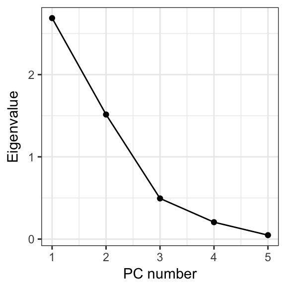
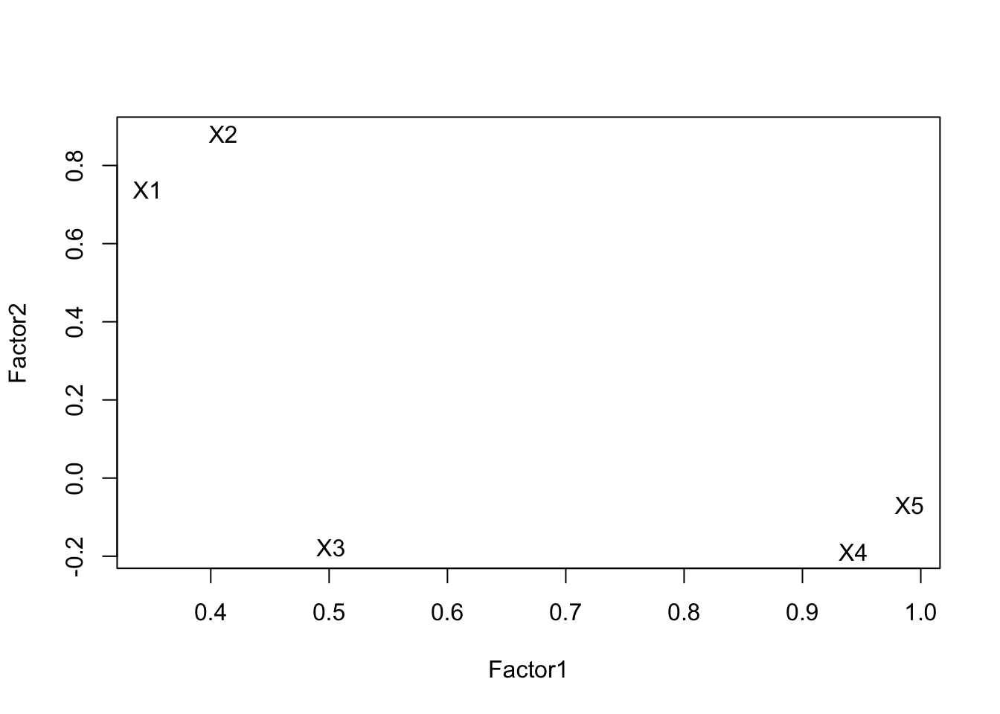

11.4 Factor Extraction
Methods
- PC Factor Model
- Iterated PC Factor Model
- Maximum Likelihood
- Choose the first \(m\) principal components and modify them to fit the factor model defined in the previous section.
- They explain the greatest proportion of the variance and are therefore the most important
extract_pca <- princomp(stan.dta)
var_pc <- (extract_pca$sdev)^2
qplot(x=1:length(var_pc), y=var_pc, geom=c("point", "line")) +
xlab("PC number") + ylab("Eigenvalue")
11.4.1 PC Factor Model
Recall that \(\mathbf{C} = \mathbf{A}\mathbf{X}\), C’s are a function of X
\[ X_{1} = a_{11}C_{1} + a_{12}C_{2} + \ldots + a_{1P}C_{p} \]
We want the reverse: X’s are a function of F’s.
- Use the inverse! –> If \(c = 5x\) then \(x = 5^{-1}C\)
The inverse PC model is \(\mathbf{X} = \mathbf{A}^{-1}\mathbf{C}\).
Since \(\mathbf{A}\) is orthogonal, \(\mathbf{A}^{-1} = \mathbf{A}^{T} = \mathbf{A}^{'}\), so
\[ X_{1} = a_{11}C_{1} + a_{21}C_{2} + \ldots + a_{P1}C_{p} \]
But there are more PC’s than Factors…
\[ \begin{equation} \begin{aligned} X_{i} &= \sum_{j=1}^{P}a_{ji}C_{j} \\ &= \sum_{j=1}^{m}a_{ji}C_{j} + \sum_{j=m+1}^{m}a_{ji}C_{j} \\ &= \sum_{j=1}^{m}l_{ji}F_{j} + e_{i} \\ \end{aligned} \end{equation} \]
Adjustment
- \(V(C_{j}) = \lambda_{j}\) not 1
- We transform: \(F_{j} = C_{j}\lambda_{j}^{-1/2}\)
- Now \(V(F_{j}) = 1\)
- Loadings: \(l_{ij} = \lambda_{j}^{1/2}a_{ji}\)
11.4.2 Iterated PC Factor Model
- Select common factors to maximize the total communality
- Get initial communality estimates
- Use these (instead of original variances) to get the PC’s and factor loadings
- Get new communality estimates
- Rinse and repeat
- Stop when no appreciable changes occur.
11.4.3 Maximum Likelihood
- Assume that all the variables are normally distributed
- Use Maximum Likelihood to estimate the parameters
11.4.4 Example
- PC Factor Model using the
principalfunction in thepsychpackage.
#library(psych)
pc.extract.norotate <- principal(stan.dta, nfactors=2, rotate="none")
print(pc.extract.norotate)
## Principal Components Analysis
## Call: principal(r = stan.dta, nfactors = 2, rotate = "none")
## Standardized loadings (pattern matrix) based upon correlation matrix
## PC1 PC2 h2 u2 com
## X1 0.53 0.78 0.90 0.104 1.8
## X2 0.59 0.74 0.89 0.106 1.9
## X3 0.70 -0.39 0.64 0.360 1.6
## X4 0.87 -0.38 0.90 0.099 1.4
## X5 0.92 -0.27 0.91 0.087 1.2
##
## PC1 PC2
## SS loadings 2.71 1.53
## Proportion Var 0.54 0.31
## Cumulative Var 0.54 0.85
## Proportion Explained 0.64 0.36
## Cumulative Proportion 0.64 1.00
##
## Mean item complexity = 1.6
## Test of the hypothesis that 2 components are sufficient.
##
## The root mean square of the residuals (RMSR) is 0.08
## with the empirical chi square 12.61 with prob < 0.00038
##
## Fit based upon off diagonal values = 0.97\[ \begin{equation} \begin{aligned} X_{1} &= 0.53F_{1} + 0.78F_{2} + e_{1} \\ X_{2} &= 0.59F_{1} + 0.74F_{2} + e_{2} \\ X_{3} &= 0.70F_{1} - 0.39F_{2} + e_{3} \\ X_{4} &= 0.87F_{1} - 0.38F_{2} + e_{4} \\ X_{5} &= 0.92F_{1} - 0.27F_{2} + e_{5} \\ \end{aligned} \end{equation} \]
- Using ML extraction. The
cutoffargument hides loadings under that value for ease of interpretation. Here I am setting that cutoff at 0 so that all loadings are being displayed.
ml.extract.norotate <- factanal(stan.dta, factors=2, rotation="none")
print(ml.extract.norotate, digits=2, cutoff=0)
##
## Call:
## factanal(x = stan.dta, factors = 2, rotation = "none")
##
## Uniquenesses:
## X1 X2 X3 X4 X5
## 0.37 0.00 0.63 0.06 0.04
##
## Loadings:
## Factor1 Factor2
## X1 -0.06 0.79
## X2 -0.07 1.00
## X3 0.58 0.19
## X4 0.93 0.28
## X5 0.90 0.39
##
## Factor1 Factor2
## SS loadings 2.02 1.88
## Proportion Var 0.40 0.38
## Cumulative Var 0.40 0.78
##
## Test of the hypothesis that 2 factors are sufficient.
## The chi square statistic is 0.2 on 1 degree of freedom.
## The p-value is 0.652The uniqueness’s (\(u^{2}\)) for X2, X4, X5 are pretty low. The factor equations now are:
\[ \begin{equation} \begin{aligned} X_{1} &= -0.06F_{1} + 0.79F_{2} + e_{1} \\ X_{2} &= -0.07F_{1} + 1F_{2} + e_{2} \\ X_{3} &= 0.58F_{1} + 0.19F_{2} + e_{3} \\ \vdots \end{aligned} \end{equation} \]
load <- ml.extract.norotate$loadings[,1:2]
plot(load, type="n") # set up the plot but don't put points down
text(load, labels=rownames(load)) # put names instead of points
Notice that neither extraction method reproduced our true hypothetical factor model. Rotating the factors will achieve our desired results.